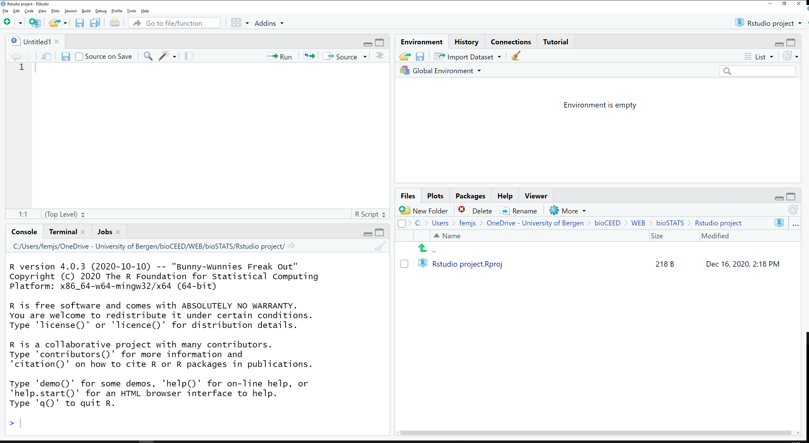

[1] 7R and RStudio
Basics for Beginners
Richard J Telford <richard.telford@uib.no>
Department of Biological Sciences, University of Bergen
15 October 2025
Why ?
- free
- open source
- large and friendly user community
- many statistical methods implemented
- makes publication ready figures
- reproducible research
- code is easy to share and publish
Why RStudio?
Integrated Development Environment designed for R
(Almost) Never need to use R GUI directly
- code completion
- syntax highlighting
- bracket matching
- syntax error detection
Positron is an alternative IDE
Navigating RStudio
#1 Top tip for using RStudio
Use RStudio Projects
File >> New Project… >> New Directory >> New Project
- Manages working directory
- Works with Git
- Remembers what you were doing last time
Beginning R
Make an object and use <- to assign. Type its name to see it
For large objects, use View() or click on the object in the environment tab, or dplyr::glimpse for a condensed view.
Rows: 344
Columns: 8
$ species <fct> Adelie, Adelie, Adelie, Adelie, Adelie, Adelie, Adelie, Ad…
$ island <fct> Torgersen, Torgersen, Torgersen, Torgersen, Torgersen, Tor…
$ bill_len <dbl> 39.1, 39.5, 40.3, NA, 36.7, 39.3, 38.9, 39.2, 34.1, 42.0, …
$ bill_dep <dbl> 18.7, 17.4, 18.0, NA, 19.3, 20.6, 17.8, 19.6, 18.1, 20.2, …
$ flipper_len <int> 181, 186, 195, NA, 193, 190, 181, 195, 193, 190, 186, 180,…
$ body_mass <int> 3750, 3800, 3250, NA, 3450, 3650, 3625, 4675, 3475, 4250, …
$ sex <fct> male, female, female, NA, female, male, female, male, NA, …
$ year <int> 2007, 2007, 2007, 2007, 2007, 2007, 2007, 2007, 2007, 2007…Functions
Everything that does something is a function
[1] 3.75Also infix functions e.g. + and %in%
Getting help
?mean to get help on the function mean()
??correlation to get help on the topic correlation
Can also search in the RStudio help tab.
Packages
You can do a lot with base R, but the real power comes when you use extra packages with extra functions.
Install a package from CRAN with
load a package with library()
Now tidyverse functions are available.
Many packages are on CRAN, some are on BioConductor or only available to install from GitHub
Tidyverse vs Base R
You can do everything in base R.
Many things are easier in tidyverse - a collection of packages with consistent function
dplyr&tidyrfor manipulating data framesggplot2for beautiful figurespurrrfor running code repeatedlylubridatefor manipulating dates
And many more
Resourses
- R books
- Interactive tutorials & apps
Books


Rklubben
“The first rule about R club is you talk about R.”
- Come and help fix someone else’s R problems
- And get help yourself
Fridays 1400-1600 in Tunet (4th floor Bio A)